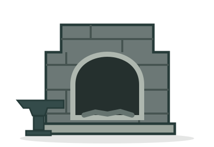

Your workshop
The Tiny Forge
Build the heat. Craft a sword. Start again.
Forge condition
At the anvil

Too cold
Heat
20 / 100
Swords made
0
MTM6302 · Assignment 3
BlacksmithYour workshop
Build the heat. Craft a sword. Start again.
Forge condition

Too cold
20 / 100
0